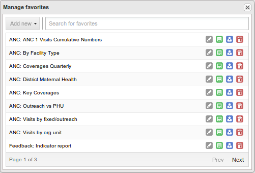

When you have created a pivot table it is convenient to save it as a favorite. To do so, click "Favorites" on the top menu, click "Add new", give the favorite a descriptive name and click "Create". You can search for favorites through the search input field at the top. To load an existing favorite, simply click the name of the favorite in the list.
To rename a favorite, click the grey "Rename" icon next to the favorite in the list, change the name and click "Update". To overwrite an existing favorite with the current pivot table, click the green "Overwrite" icon. To share a favorite with everyone or a user group, click the blue "Share" icon. To delete a favorite, click the red "Delete" icon.
|  |